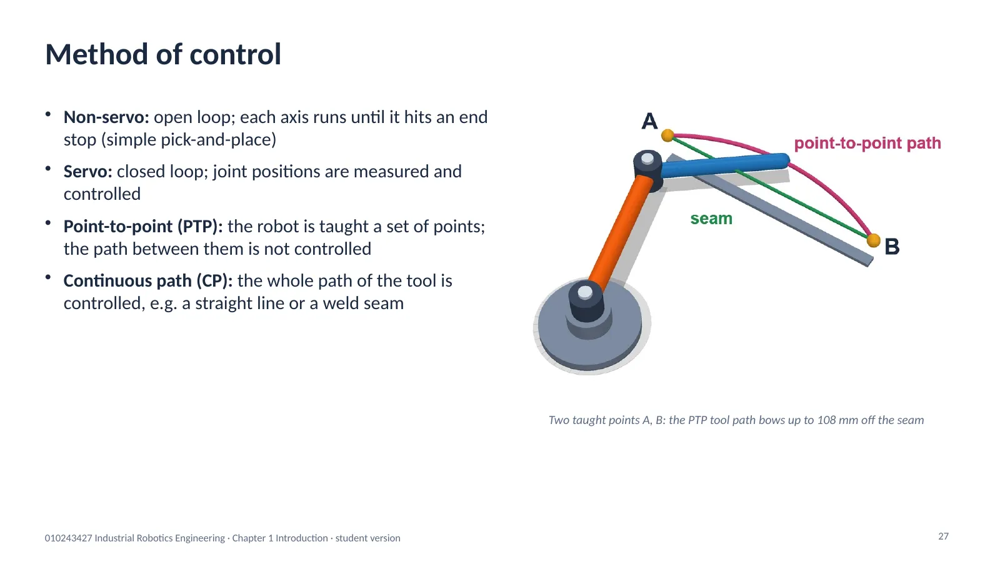
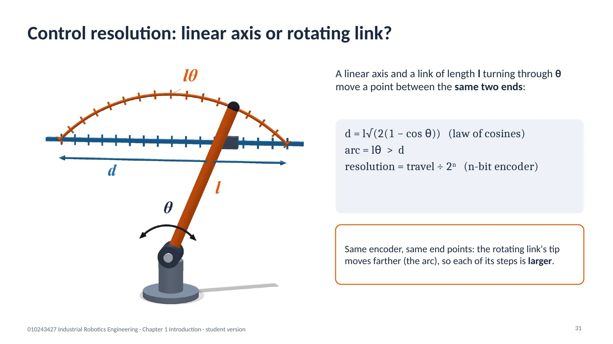

Week 2 looks at the robot as a real machine: what drives it, what it is used for, how it is controlled, how precise it is, and which tool sits at its end. This page covers slides pp. 23–33. It has 2 tools (A, B) and 3 problems, including homework 1.2.
$$ d = l\sqrt{2(1-\cos\theta)} $$ $$ \text{resolution} = \frac{\text{travel}}{2^{n}} $$
Most industrial arms today are driven by electric servo motors: clean, quiet and precise. Hydraulics are still used for heavy lifting, and pneumatics for grippers and pick-and-place between end stops, because compressed air is springy and hard to stop accurately mid-stroke. One robot often mixes them, e.g. electric joints with a pneumatic gripper.
Point-to-point (PTP) against continuous path (CP) on a weld seam
สไลด์บทที่ 1 หน้า 27 · Spong 1.2.1
Chapter 1 slides, p. 27 · Spong 1.2.1

สไลด์หน้า 27 · แตะรูปเพื่อขยายSlide p. 27 · tap to enlarge
โจทย์
Problem
แขนสองก้าน (0.5 m, 0.4 m) ต้องเชื่อมตามแนวตรงจาก A ไป B ผู้ควบคุมสอนเพียงจุด A และ B แล้วสั่งแบบจุดต่อจุด ปลายแขนจะเดินตามแนวเชื่อมหรือไม่ ถ้าไม่ จะแก้อย่างไร
A two-link arm (0.5 m, 0.4 m) must weld along the straight seam from A to B. The operator teaches only A and B and runs it point-to-point. Does the tool follow the seam? If not, how do we fix it?
Accuracy is the distance from the commanded point (pink) to the mean of where the tool went (blue cross). Repeatability is the scatter of the points round their mean (yellow dashed circle).
The systematic error comes from a model that does not match the real arm: wrong link lengths, encoder zero offsets. Calibration fixes it.
The scatter comes from gear backlash, flexibility and encoder resolution: only better mechanics fix it.
Industrial robots are usually more repeatable than accurate, which is why their points are taught with a teach pendant instead of typed in as coordinates.
Move the three sliders: the tool turns every way, but the wrist centre never moves, because all three axes pass through it. That splits the problem: the first three joints place the wrist centre, the wrist sets the tool direction (used in chapter 4).
ความละเอียดการควบคุม (สไลด์หน้า 31)
Control resolution (slide p. 31)

สไลด์หน้า 31 · แตะรูปเพื่อขยายSlide p. 31 · tap to enlarge
An \(n\)-bit encoder splits the joint's travel into \(2^n\) steps. A linear axis going from one point to the other travels a straight line (the chord \(d\)), but the tip of a link turning between the same two points travels the arc \(l\theta\), which is always longer. So one step of the rotating joint moves the tip farther. The law of cosines in the isosceles triangle with sides \(l, l\) and angle \(\theta\) gives \(d^2 = 2l^2(1 - \cos\theta)\).
2
ตัวอย่างที่ 3: ความละเอียด 10 บิต l = 1 m, θ = 90°
Worked example 3: 10-bit resolution, l = 1 m, θ = 90°
Homework: work it out on paper first, then enter the answer in millimetres to check it. The simulation lets you change the number of bits to see the trend, but does not print the answer.
In problem 1 raise the taught points from 2 to 3, 5, 9: the error from the seam falls fast (about 107 → 33 → 10 → 3 mm).
A continuous-path controller does this by itself: it computes many points along the line and the joint angles at each (inverse kinematics, chapter 4, and trajectories, chapter 7).
Try this 2 — accurate or repeatable
In tool A set a systematic error of 1 mm and a scatter of 0.1 mm: the points are tight but off the target (repeatable, not accurate).
Teach the point again where the arm really goes and the systematic error is gone at once: that is why factories teach points.
Try this 3 — a wider angle, a bigger gap
In problem 2 move θ to 180°: the chord is 2l but the arc πl, a ratio of 1.57.
For a very small angle the chord and the arc are almost equal, and so are the two resolutions.
Source: chapter 1 slides, pp. 23–33 (the pictures are on this page) · Spong 1.2 and the chapter 1 problems · Craig 8.3